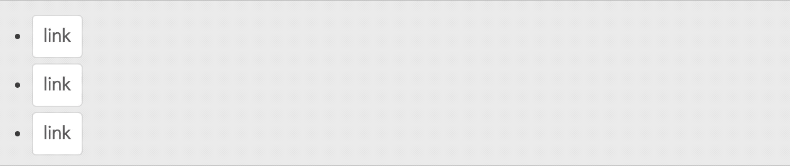

[Why use it]
개별 요소(자식 요소)에 이벤트 리스너를 붙여주게 되면, 동적으로 요소가 추가되는 경우 추가되는 요소는 DOM에 존재하지 않으므로 모든 요소에 각각 이벤트 리스너를 등록해줘야 합니다. 이는 번거로운 작업일 뿐 아니라 메모리 낭비가 일어나 실행 속도가 저하되는 요인이 됩니다. 이와 같은 경우를 해결하기 위해 이벤트 위임을 사용합니다.
Examplelist의 자식 요소가 동적으로 추가되는 경우를 구현한 예제입니다.
이벤트 버블링을 활용하여 자식 요소에 개별적으로 이벤트 리스너를 등록하지 않고, 부모 요소에 이벤트 리스너를 등록해 주는 것을 말합니다.
<ul>
<li><a href="#"></a></li>
<li><a href="#"></a></li>
<li><a href="#"></a></li>
</ul>
$('ul').on('click', 'a', function (){
...
});
Examplelist 안의 a 클릭 이벤트를 이벤트 위임을 사용해 구현한 예제입니다.

NOTICE :미리 알아두면 좋을 개념
- Event Propagation(이벤트 전파)
- Event Bubbling(이벤트 버블링): 자식 요소에서 발생한 이벤트가 부모 요소로 전파되는 것
- Event Capturing(이벤트 캡처링): 자식 요소에서 발생한 이벤트가 부모 요소부터 시작하여 이벤트를 발생시킨 자식 요소까지 도달하는 것
개별 요소(자식 요소)에 이벤트 리스너를 붙여주게 되면, 동적으로 요소가 추가되는 경우 추가되는 요소는 DOM에 존재하지 않으므로 모든 요소에 각각 이벤트 리스너를 등록해줘야 합니다. 이는 번거로운 작업일 뿐 아니라 메모리 낭비가 일어나 실행 속도가 저하되는 요인이 됩니다. 이와 같은 경우를 해결하기 위해 이벤트 위임을 사용합니다.
Examplelist의 자식 요소가 동적으로 추가되는 경우를 구현한 예제입니다.
jQuery의 on() 메서드를 이용해 이벤트 핸들러가 지정되어 있는 selector의 자식 요소 (childSelector) 에 이벤트를 바인딩해줍니다.
// 자식 요소에 이벤트 바인딩
$('ul a').on('click', function (){
...
});
$('ul').on('click', 'a', function (event){
console.log(event.target) // a
console.log(event.currentTarget) // a
console.log(event.delegateTarget) // ul
});
$('table').on('click', 'td', function (event) {
...
});
클릭 이벤트를 발생시켰을 때 이벤트가 바인딩 되어있는 상위 요소를 찾으려면 event.delegateTarget, 실제 이벤트가 바인딩 되어있는 요소를 찾으려면 event.currentTarget, 이벤트가 일어난 곳을 찾으려면 event.target 을 사용하면 됩니다.
참고
- this와 currentTarget은 동일합니다. (단, $.proxy 를 사용하거나 scope가 다를 경우 this는 제공된 컨텍스트와 동일해집니다.)
- 위임되지 않은 이벤트의 경우 delegateTarget 과 currentTarget 은 동일합니다.
- delegateTarget은 jQuery 에서만 사용할 수 있습니다.
Javascript 의 addEventListener() 메서드를 이용해 selector에 이벤트를 바인딩하고, 조건문으로 이벤트가 일어난 곳을 필터링 해줍니다. (nodeName 은 해당 프로퍼티를 리턴해줍니다. HTML 요소의 태그 이름을 '대문자'로 저장합니다.)
// 자식 요소에 이벤트 바인딩
document.querySelectorAll('a').addEventListener('click', function(e) {
...
});
document.querySelector('ul').addEventListener('click', function(event) {
if (event.target && event.target.nodeName === 'A') {
console.log(event.target) // a
console.log(event.currentTarget) // ul
}
});
document.querySelector('table').addEventListener('click', function(event) {
if (event.target && event.target.nodeName === 'TD') {
...
}
});
클릭 이벤트를 발생시켰을 때 실제 이벤트가 바인딩 되어있는 요소를 찾으려면 event.currentTarget, 이벤트가 일어난 곳을 찾으려면 event.target 을 사용하면 됩니다.